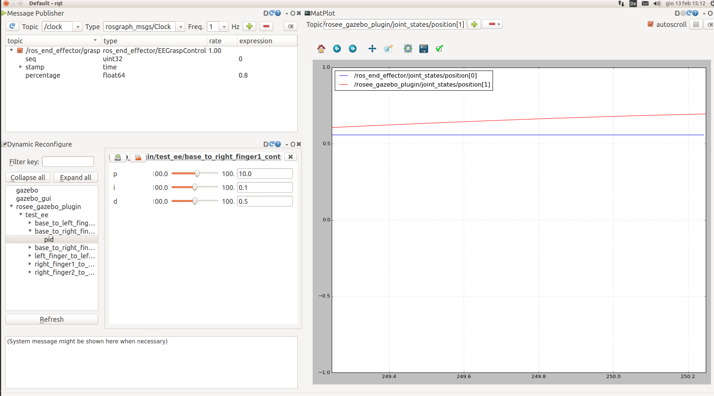

ROS End-Effector Gazebo Plugins¶
This package is an utility to help end effector dynamic simulation with Gazebo. It is hosted on github here.
Generic Information¶
It is very similar to the “official” ROS package for control : gazebo_ros_control.
It includes a gazebo plugin to take commands (references) from /ros_end_effector/joint_states topic and use to move the simulated robot in gazebo. The same plugin also publish the “real” joint States (derived by the gazebo simulation) in the topic /rosee_gazebo_plugin/joint_states.
Take care: In /ros_end_effector/joint_states topic there are state for only some joints (and never for not actuated ones); while in /rosee_gazebo_plugin/joint_states there are state for ALL non-fixed joints, always, included not actuated (i.e. mimic). This may change in future, but for now I leave as it is because returning also mimic joints is not so a problem.
At the moment each joint can be commanded in position or in velocity, using the SetPositionTarget() and SetVelocityTarget() of gazebo. Gains (pid) are settable in a config file (see later for istructions).
There is also a ROS node, rosee_gazebo_plugin_DynReconfigure which create dynamic_reconfigure servers to give the possibility to change the PID params during the simulation.
Mimic Joints¶
Thanks to the mimic_joint_plugin (and to mimic_joint_gazebo_tutorial to understand how to use it), now also mimic joints work correctly. The argument set_pid of this plugin should be set to false, because otherwise a pid controller is used, that is the “default” gazebo one (see plugin page for more info). And also when mimicking, we want to reply exactly the angle of the other joint (or not?). See above how to deal with this plugin if your urdf model has some mimic joint
Prepare your Model for Gazebo¶
You need additional steps on your .urdf file to make Gazebo simulation works.
Be sure to have an urdf file ready for gazebo info here. Also add in your .urdf :
<gazebo> <plugin name="SOMENAME" filename="librosee_plugin.so"> </plugin> </gazebo>
Create new YOURROBOTNAME_control.yaml file in rosee_gazebo_plugins/configs folder, following the examples present there. Note that supported controllers type are JointPositionController and JointVelocityController, but for now ROS End-Effector only send position reference (so use JointPositionController for now)
NOTE In future this file will probably be shifted somewhere else and pointed with a config file.
Important If your urdf file has some mimic joint, you have to add a mimic_joint_plugin for each mimic joint. See two_finger_mimic.urdf.xacro file or mimic_joint_gazebo_tutorial for example on how to use the plugin
How to Install¶
NOTE You probably already installed this if you have followed the steps in Install section
git clone https://github.com/roboticsgroup/roboticsgroup_gazebo_plugins.git #necessary external plugin
git clone -b <branch_you_want> https://github.com/ADVRHumanoids/rosee_gazebo_plugins.git
compile with catkin_make
How to Run¶
To run ROS End-Effector as a whole, follow the guide in How to use ROS End-Effector with your End-Effector section.
Anyway, ROS End-Effector Gazebo Plugins is a package that run independently, so you can also launch it alone:
roslaunch rosee_gazebo_plugins twofinger.launchTo run the dynamic reconfigurator:
rosrun rosee_gazebo_plugins DynReconfigure two_fingerAlso useful
rqtAnd set it to have things like that, for example to tune the gains:

{kind=link}